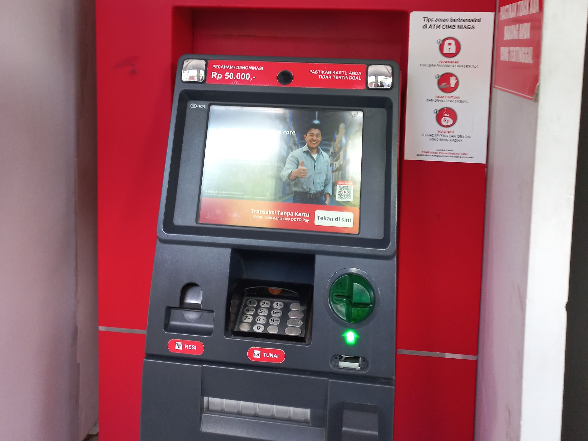

PETA
PETA
Peta Persebaran Automated Teller Machine (ATM) di Lingkungan Universitas Gadjah Mada
Peta yang kami sajikan memuat beberapa informasi sebagai berikut :
- Sebaran Titik ATM di Lingkungan Universitas Gadjah Mada
- Jaringan Jalan Terdekat dari Setiap Fakultas di UGM Menuju ke ATM
Daftar ATM
Daftar ATM

ATM BRI Mirota Kampus
Jl. C. Simanjuntak No.70, Terban, Kec. Gondokusuman, Kota Yogyakarta, Daerah Istimewa Yogyakarta 55223

ATM CIMB Niaga Mirota Kampus
Jl. C. Simanjuntak No.70, Terban, Kec. Gondokusuman, Kota Yogyakarta, Daerah Istimewa Yogyakarta 55223

ATM BCA Mirota Kampus
Jl. C. Simanjuntak No.70, Terban, Kec. Gondokusuman, Kota Yogyakarta, Daerah Istimewa Yogyakarta 55223